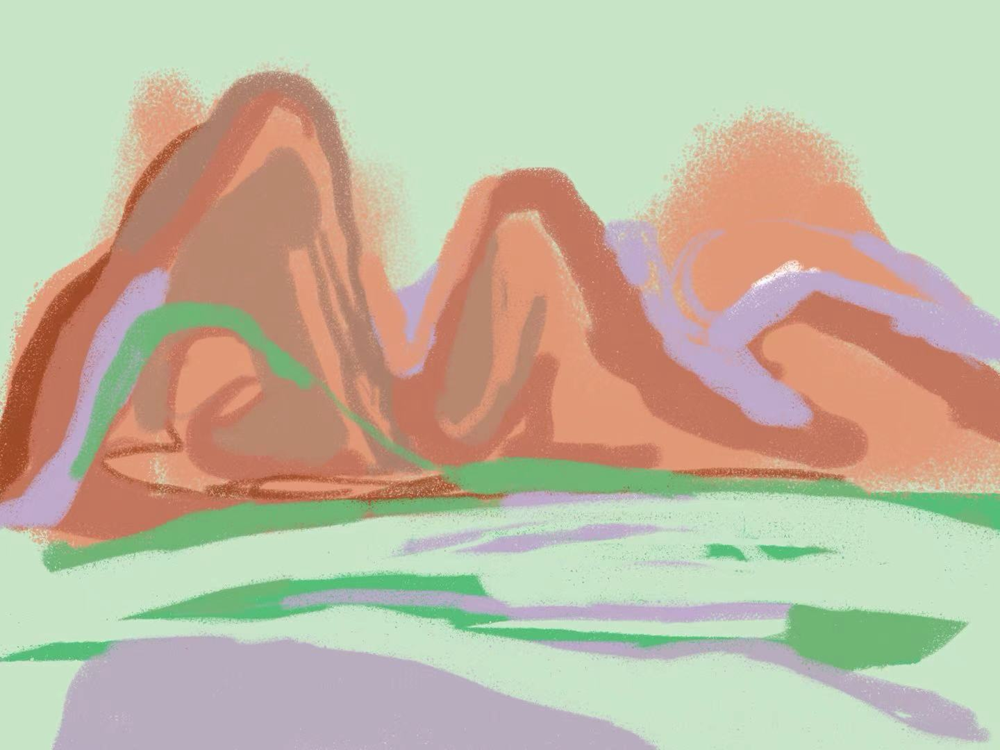
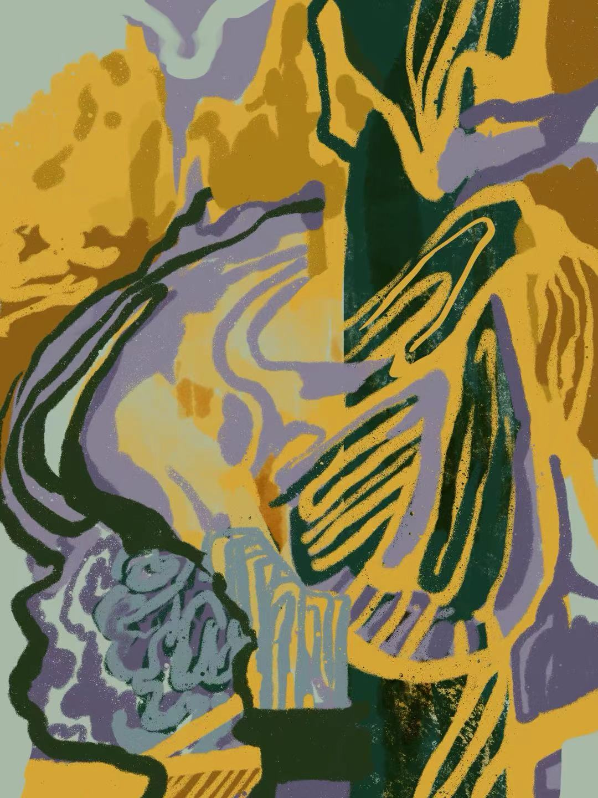
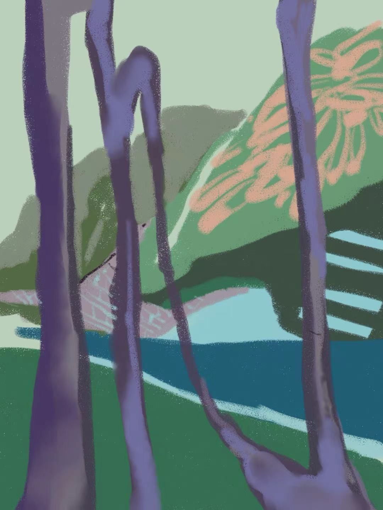
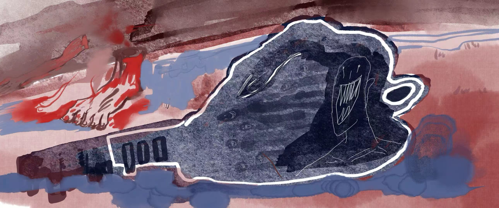

Site-specific works
By visualizing ecological relationships and emotional experiences of environmental change, artists can contribute to climate discussions by creating new ways for people to perceive and reflect on complex ecological issues, encouraging dialogue between scientific knowledge, cultural experience, and public awareness.
climate change is not only a scientific issue but also a cultural and psychological experience.

These dynamic flows, emphasizing how human activity exists within larger environmental systems.

This perspective resonates with wetland ecologies, where plants, animals, microorganisms, and water cycles depend on one another for survival.

The urban summer painting, depicting heat, radiation, and fragile human bodies, further highlights the environmental pressures caused by climate change and urbanization, reminding us that human infrastructures and natural processes are closely linked.
